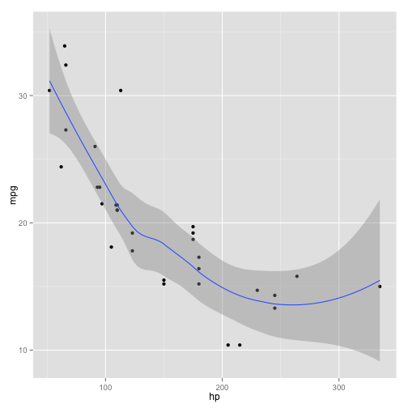

A reST document for knitr¶
This is a reStructuredText document. The input filename extension is Rrst and the output filename will be rst. Here is how we write R code in knitr:
options(width = 75)
# do not use the sourcecode directive
render_rst(strict = TRUE)
# global chunk options
opts_chunk$set(cache = TRUE, fig.width = 5, fig.height = 5)
More examples¶
A code chunk begins with .. {r label, options}, and ends with .. .. (note the space in between). Optionally you can precede all R code with two dots, e.g.
1 + 1
## [1] 2
set.seed(123)
rnorm(10)
## [1] -0.56048 -0.23018 1.55871 0.07051 0.12929 1.71506 0.46092
## [8] -1.26506 -0.68685 -0.44566
warning("do not forget the space after ..!")
## Warning: do not forget the space after ..!
Here is a plot:
library(ggplot2)
qplot(hp, mpg, data = mtcars) + geom_smooth()
## geom_smooth: method="auto" and size of largest group is <1000, so using
## loess. Use 'method = x' to change the smoothing method.

A ggplot2 example
Inline R code is like this: the value of pi is 3.1416.